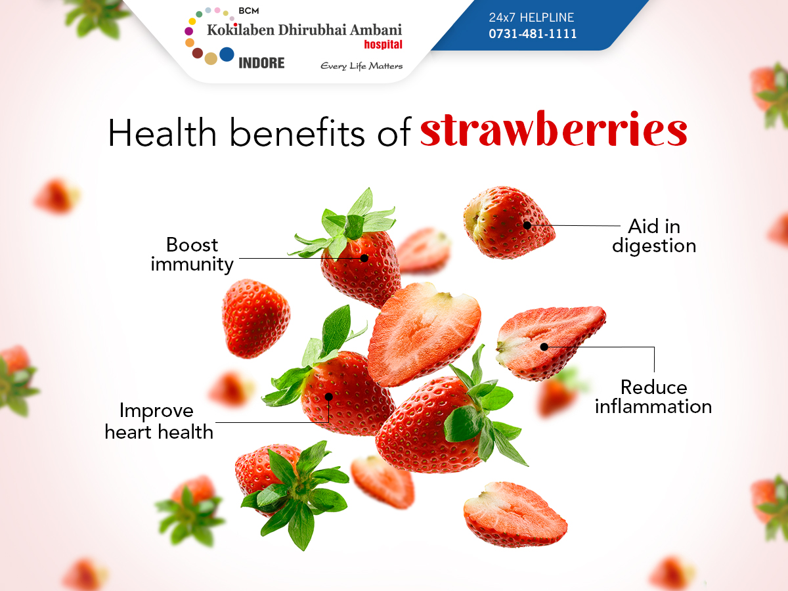

Eating strawberries offers numerous health benefits due to their rich nutrient content, including vitamins, antioxidants, and fiber. They can support the immune system, improve heart health, and help manage blood sugar levels. Strawberries are also low in calories and may aid in weight management.It is recommended that individuals eat a serving of 8 strawberries a day. Clinical research has determined that this recommendation can have some healthy benefits,
Rich in Vitamin
Antioxidant Properties
Heart Health
Blood Sugar Management
Good Source of Fiber
Strawberries 101: Nutrition Facts and Health Benefits